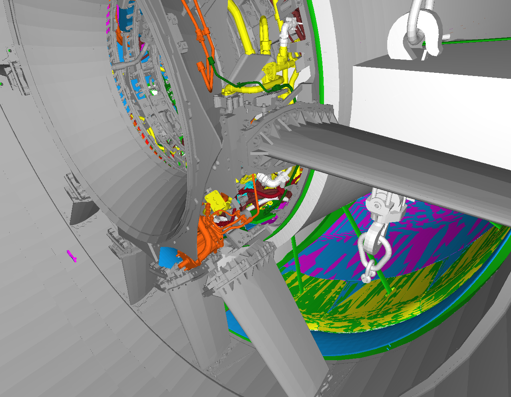

Out-of-core Verfahren
von Marius Reddig
Out-of-core Verfahren
Inhalt
Inhalt
- Motivation
- Datenverwaltung
- Verwaltungs Algorithmen
- Hybride Ressourcenverwaltung
- Daten Modifikation
Out-of-core Verfahren
Motivation

[1]
Motivation
Lösungsansätze:
- Erweiterung des Arbeitssatzes
- Verwaltung der Daten
- Vereinfachung der Daten
- Verringerung des Datensatzes
Out-of-core Verfahren
Datenverwaltung
Datenverwaltung
- Verwalten zwischen in-core und out-of-core Daten
- Wenig Latenz zwischen Datenanfrage und Bereitstellung
- Effizienter Austausch von Daten
=> implementiert durch eine Verwaltungsschicht


[1]
Out-of-core Verfahren
Verwaltungs Algorithmen


[1]


[1]
Out-of-core Verfahren
Hybride Ressourcenverwaltung

[1]

[2]
Hybride Ressourcenverwaltung
- Jobs werden in verschiedene Kernels sortiert.
- Wenn ein Prozessor frei ist wird der Scheduler ausgeführt.
- Der Scheduler sammelt Informationen über die Jobs
- Der passendste Job wird dem Prozessor übergeben
Hybride Ressourcenverwaltung
Mögliche Gewichtungen für das Scheduling von Jobs
- werden Daten benötigt
- Liegen die Daten in-core
- Liegen die Daten in bei einem anderen Prozessor
- Wird der Prozessor für den Job bevorzugt
Out-of-core Verfahren
Daten Modifikation
Daten Modifikation
Daten Modifikation kann in zwei Gruppen Unterteilt werden:
- Die Daten vereinfachen
- Den Datensatz vereinfachen

[3]